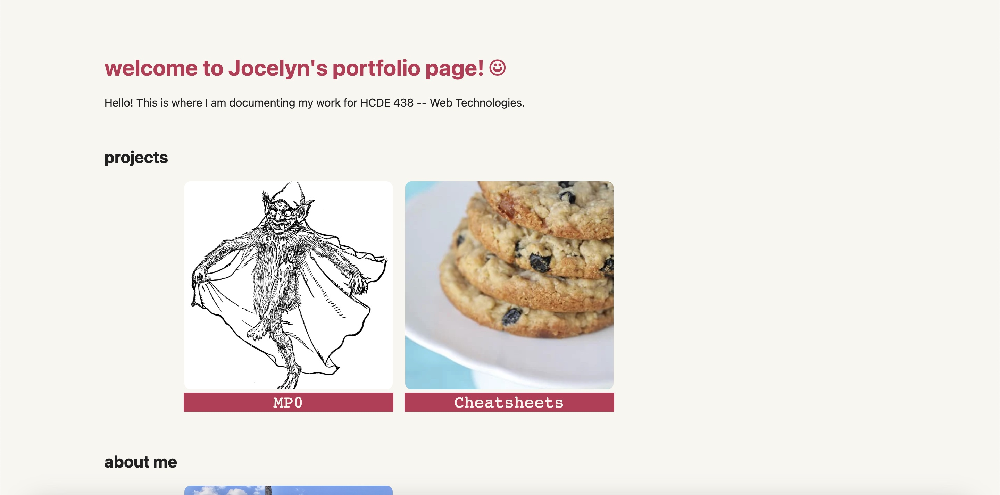

✍ MP0: Portfolio Setup
Overview
I first started out by creating my repo and cloned it in VS Code. I then copied over the example site to outline the structure of my portfolio. Next, I changed out all the pre-existing content to add an about me page, cheatsheets page, and MP0 writeup page. To add my custom style, I changed out the default font and colors from black to pink.
Portfolio Landing Page
I also added some CSS transitions for movement on the page. For additional personalization, I added a footer with the course, quarter, and my name. I found that there was no way to navigate back to a previous page after clicking to a different page, so I added a "Go Back" button for navigation. After adding all these changes, here is my skeleton portfolio site:

Skeleton Portfolio Site
Issue
Overlapping images and code snippets
One issue I encountered when I tried cloning the repository, I had an error that restricted me from cloning in VS Code as I did not have git insalled on my computer. To resolve this error, I installed Homebrew. After installation, I was able to enter "Git: Clone" and successfully clone my repo in VS Code.
Cheatsheets Page Layout
Another issue that I encountered was structuring my cheatsheets page. I wanted to format the content in a way that the images were on the left and code snippets were on the right, but there was some weird overlap where the images and code snippets were on top of each other. To resolve this error, I read through the CSS documentation on flex and played a little bit of the Flexbot Froggy game to get a better understanding of how 'justify-content' and 'flex-direction' worked. For my cheatsheets page, I sectioned everything off into their own 'div' section and added one line of code at a time until it looked the way I wanted.
CSS Transition
- Color Change
- Transformation Scale
One CSS transition that I implemented was a color change of the title and title background. I chose this as it added some movement and color to the page. To make this work, I added a CSS hover component (for the CSS code, refer to cheatsheets ). On hover, the title would undergo an inverse color change from white background and pink text to pink background and white text.
Color change on hover
I thought it was fun implementing the first CSS transition, so I decided to add another one to my portfolio. The second CSS transition that I implemented was a transformation scale on the pictures. I chose to use this transition as it added more movement on the page to indicate that the images could be clicked as an action. To make this work, I added a CSS hover component (for the CSS code, refer to cheatsheets ). On hover, the image would shrink and decrease in brightness to indicate that the image would like a button and could be clicked to travel to a different page.
Transformation scale
Ideas & Future
Here are some additional ideas and features I would like to add to my site in the future!
- Implementing a repeating CSS transition (e.g. on hover, the title color changes back and forth between the white and pink instead of just once).
- Adding embeded videos to display final project prototypes.
- Animation on the page that automatically runs without a hover component.
- Link to my socials like email or LinkedIn.
- Add sound/music (maybe embed a Spotify player?)